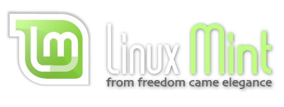

Cinnamon Mint |
 |
|
Linux
LinuxMint Goo$ Home Linux Mint Project Home Page Cinnamon Project Home Page History and Background Versions Linux Mint 14 Open Source Software Reviews |
|
I do have to admit that Linux Mint is my favorite Linux Distribution. According to Mint, they are the 4th most widely used desktop home operating system in the world. That's behind Microsoft Windows (1st), Apple's Mac OS X (2nd), and Canonical Ubuntu (3rd). As you may already know by reading the History and Background page, Mint is based off of Ubuntu. Because of this, you tend to reap the benifits of Ubuntu including software availability and support. However, you can use a familiar desktop environment that is faster, more lightweight (less clutter) operating system that is completely run off of doners and donations. This is attributed to the fact that Linux Mint is 100% open source. This review will take you through the ups and downs of the cinnamon version of Linux Mint.
To get Linux Mint 14 Cinnamon Edition, you can download the ".iso" here. Just burn the ".iso" to a dvd
and run the dvd using live cd. (Put the dvd into a dvd reader before booting your computer, and let the bios take care of the rest.) I won't go into to many
details on how to get up and running, so if you want to know more just look at the documentation here
. After waiting for it to load, you will be greated with a welcome message that has various helpful links and tools. Upon closing this menu you will be greated
with the warm cinnamon Desktop that should look somthing like the picture above. Notice that I already have some icons on the side. I have put these here after
about a week of use, so don't worry that you don't see all of those. If you don't plan to install the operating system, you can just browse around. However, if you
want to install, click the little cd icon to begin your install. Follow the self-explanatory instructions you are given.
[TOP]
Next you may want to change the desktop background. Right click the desktop background and hit "Change Desktop Background". This should bring up a page that looks
like the one above. You can choose the variety of nice looking free pictures Mint has provided with this release. Take that Ubuntu!
[TOP]
|
|
|
|
|
|
|
|
Now let's do some exploring around. If you hit the button in the lower right hand corner of your screen that says menu, a menu much like the Windows
menu will appear.This menu is one thing that can sometime be annoying in Cinnamon. The Mate menu is much more suited for
getting to the applications that you want to get to. Nevertheless, it does look kind of nice, and is possible to use. (Shifty eyes) Starting from
the top on the left of the menu, you will see Firefox, the default web browser, and Software Manager. Software Manager is probably the most important
application for someone who has little experience with linux, because it is the easiest way to install software to Linux Mint.
[TOP]
It is quite easy to navigate Software Manager. Although it doesn't look as nice as the Ubuntu Software Center or the
Deepin Software Center, it still serves its purpose and gets the job done. You search for programs that
you already know that you want in the search bar in the upper right, or browse through applications by type. If you don't like it, you can always
install the Deepin Software Center if you want a better experience. [TOP]
There are even more settings that can be found by clicking on the next item down the menu called "Cinnamon Settings". Another "flavor" of Linux Mint
mentioned earlier was Mate. This version of Linux Mint seems to have more customization options than cinnamon does, but doesn't have as many modern
effects. This is mostly because of its extension called "Control Center". As was talked about
here and here,
Linux Mint 15 (Olivia) will add this "Control Center" to Cinnamon along with a lot of other anticipated changes. Here in Cinnamon Settings, you can
tweak just about everything without even touching the terminal. [TOP]
Speaking of which, the terminal console in Cinnamon looks sleek, sophisticated, and professional. It has your typical white text on black background,
but has a hint of brown and grey in the background that makes it look more appealing. The use of colorful text when looking through directories
makes this terminal console easy to use. [TOP]
Upon download, you already have a well rounded set of popular open source programs installed including Gimp 2.8 and the Libre Office 3.5 suite,
just to name a few.
[TOP]
|
|
|
I won't go into much detail here, but LibreOffice Writer looks just as good as it always does here in Linux Mint Cinnamon Edition. If you want to see
a review on the Libre Office 3.5 suite, head over to the open source software reviews page.
[TOP]
As you may have started to notice, the grey windows tend to get a little old. If you want to spice things up, go in to Cinnamon Settings and select "Other". There are many differint window themes to choose from. You can also change how the cursor looks, the icons look, etc. [TOP]
|
|
|
There is obviously way more that I could add to this review, but I just don't have the time. Keep looking for updates, as Linux Mint 15 should be officially released around the end of May. To wrap this up, I would say that Linux Mint may not be for everyone, but a lot of people will find it a good free alternative to Microsoft Windows, Mac OS X, or even Ubuntu. Cinnamon is my suggestion of a specific flavor to use, because of it's modern effects, but mate is also a good choice. If you are curious about Mate, take a look at this page. As a substitute to windows, I would give Linux Mint a 7.5 out of 10, because of the great user experience and professional look. It's not quite there to replacing windows for some people, because there still isn't quite the number programs some people may want. With a few kinks worked out, I'm sure Cinnamon Mint will become an excellent operating system that almost everyone can enjoy. Go and try it out. Download an ".iso" here. Feel free to look over the Linux Mint forums and the ever popular Linux Mint Blog. [TOP]
I created a video on Youtube. It didn't come out quite the way I wanted, but it got some points across:
Click here to go back to the home page.
{kind=link}
{kind=link}
{kind=link}
{kind=link}
{kind=link}
{kind=link}
{kind=link}
{kind=link}
{kind=link}
{kind=link}